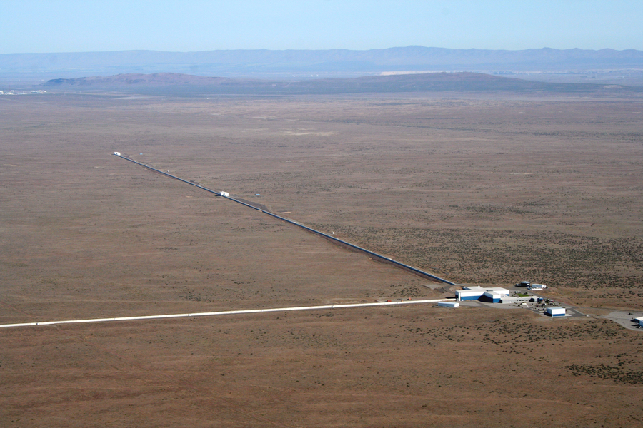

Students: Arthur Dorzée, Swapneel Datta, Nikitas Sourdakos, Juhi Patel, Kai Ebenhöh and Sofia Vazquez Alferez
Supervisors: Pietro Bonizzi and Gideon Koekoek
Semester: 2019-2020

Fig 1. - LIGO Hanford observatory, Image Source: Courtesy Caltech/MIT/LIGO Laboratory
Problem statement and motivation
In recent years there have been major advancements in the detection of Gravitational Waves.
Gravitational Waves are created by big cosmic events like Supernovas.
Even though the events that cause those waves are big, the waves themselves are very hard to detect on earth, because the effect they cause is very small.
However, projects like the LIGO telescope have managed to detect these types of waves.
Since the effects of the gravitational waves are so small, the recorded data is highly contaminated by random noise, from other influences, like passing cars or earthquakes.
To filter out the actual gravitational waves from the data, currently templates are used, that look for set patterns in the data.
This approach has some downsides, with the most important one being the computation needed to scan the data.
This is especially important, because there are plans to build new gravitational wave detectors, that are capable of detecting a lot more events.
Currently the detectors manage to detect one event per week.
This project tries to tackle these problems and come up with a novel approach to find gravitational wave events in the data.
Research questions:
In this project we try to answer the following questions:
Can we develop a method to identify gravitational wave candidates in real time using anomaly detection with restricted Boltzmann machines?
Can an attention mechanisms on convolutional neural networks improve the method of denoising the signal?
Are we able to identify noise glitches in the found gravitational wave candidates, using classification techniques?
Can we identify the sources of gravitational wave events using classification techniques?
How do the applied techniques compare to the state of the art methods?
Approach
To answer the research questions, we will try two different approaches.
The first approach will be to analyse the data and find gravitational wave events in it.
This will be done using convolutional neuronal networks, which have proven to work well on domains like natural language processing.
This domain has a lot of similaritiesto our domain.
The second approach is to use restricted boltzman machines for outlier detection.
Here we will try to learn the normal noise and use the restricted boltzman machine to find non normal events.
THese non normal events should be the gravitational wave events.
Main outcomes
The main outcome of this project should be the insights on wether or not our methods should be used in this domain.
With these insights we hope to show, that our methods should be considered for the detection of gravitational wave events.
After the experiments with different methods, we will provide insights and implementations on our models and their performance.
The first approach we are trying is to use Convolutional Neuronal Networks to detect the different gravitational wave events.
The second approach we are trying is to use Restricted Boltzmann Machines and get them to learn the normal noise. Once this is achieved, we can try to detect gravitational waves by their difference to the usual noise.
All of our results will be gathered in the final report.